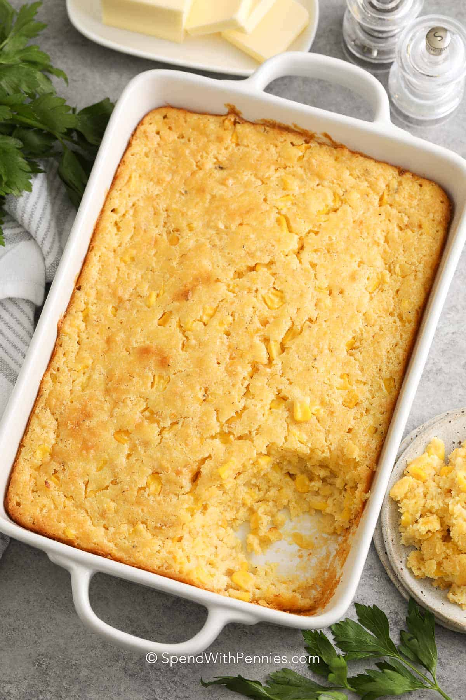

Corn Casserole

This creamy, comforting corn casserole is the perfect side dish for any family gathering.
Simple, savory, and baked to golden perfection.
Ingredients
- 1 can whole kernel corn, drained
- 1 can creamed corn
- 1 cup sour cream
- 1 stick melted butter
- 1 box Jiffy corn muffin mix
- Salt and pepper to taste
Preparation Instructions
- Preheat oven to 350°F (175°C).
- In a large bowl, combine all ingredients and stir until blended.
- Pour mixture into a greased baking dish.
- Bake for 45–50 minutes or until golden brown on top.
- Let cool slightly before serving warm.